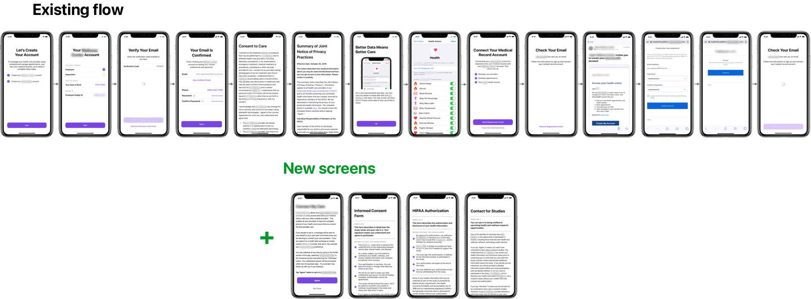
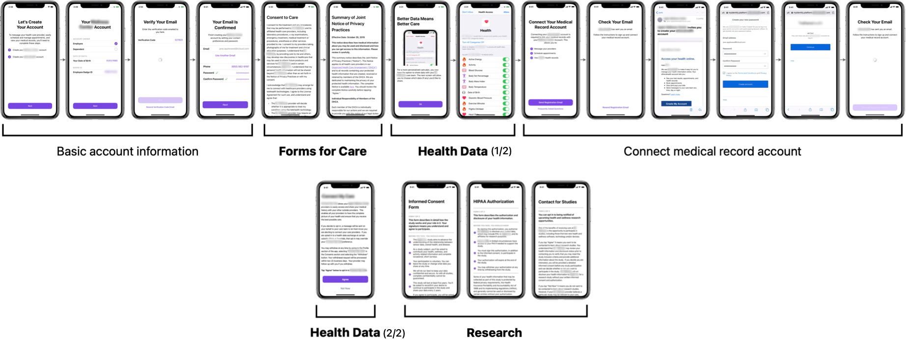
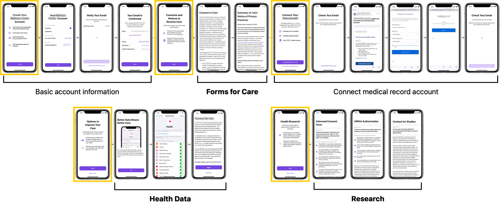
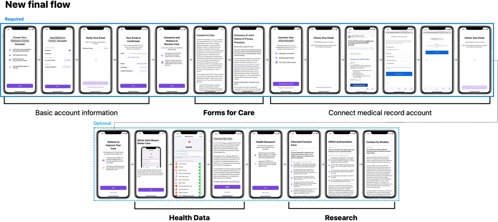
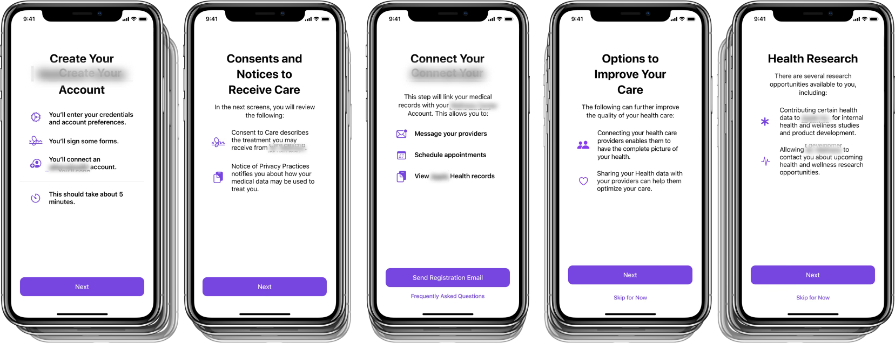
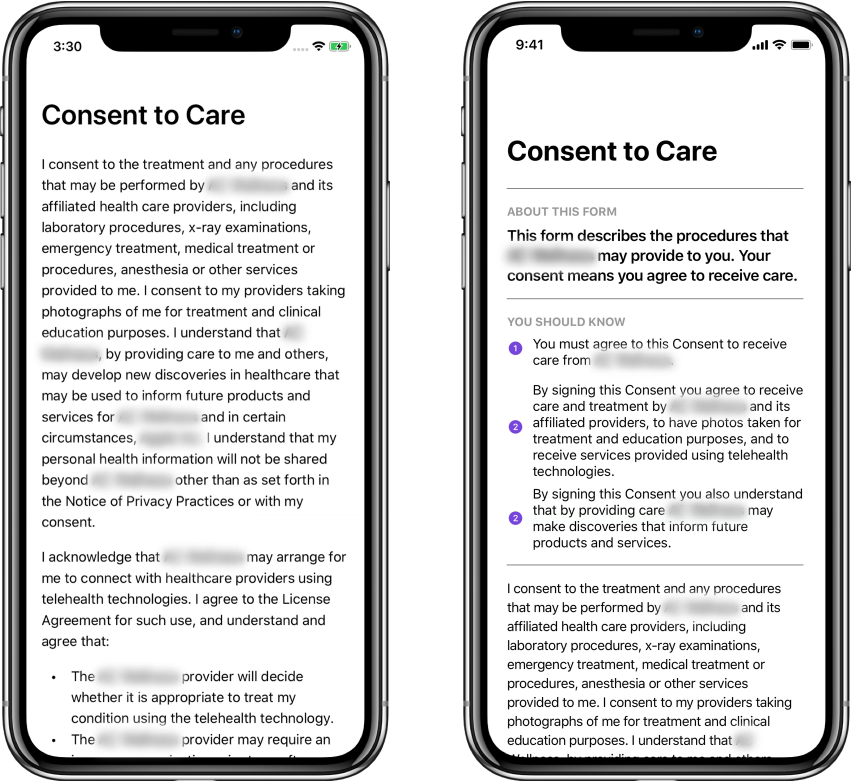
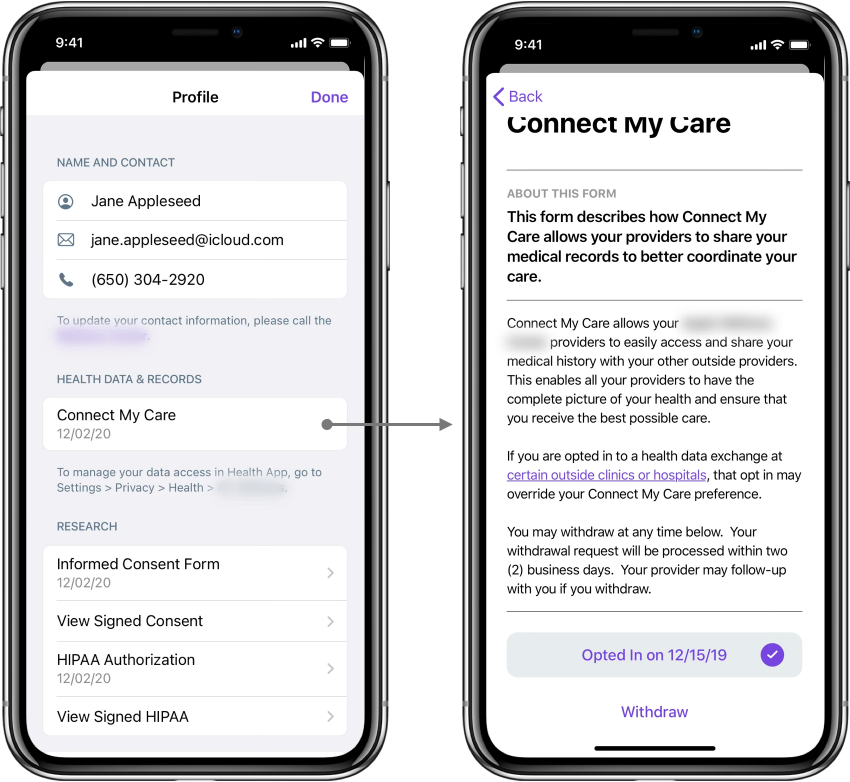

A healthcare app needed patients to review and sign several new legal consent forms, but the ask risked bolting more screens onto an already long onboarding flow that most people would click through without reading.
Restructured the forms and onboarding flow so patients actually understand what they're agreeing to. The overall flow got longer, but the required part got shorter, and every form now leads with a plain-language summary.
My RolesUX Design
TeamVisual Designer, Legal & Privacy, Engineering
The clinic asked for two things: 1) add consent forms to explain new healthcare options, and 2) let patients review and manage those forms from within the app.
However, onboarding was already long, and adding more screens for new forms would make it worse. So the team intentionally expanded the scope from "add new forms" to include helping patients actually understand the benefits and effects of each form, redesigning the forms and flow wherever it would improve clarity and user-friendliness.
Constraints: 1) certain forms had to be signed before a patient could start using the app at all, and 2) the legal copy inside each form, written by the Legal & Privacy team, could not be edited or shortened.
I mapped out key users and use cases: a new patient creating an account and reviewing forms during onboarding, a dependent creating an account and seeing a limited set of forms, and an existing patient reviewing new forms from inside the app later on.
I also catalogued the heuristics each surface needed to handle: what happens when a user gives or denies consent, what happens if they close the app mid-review, and edge cases like forms that depend on other forms being signed first. The in-app side needed its own form management view, clear agreed/not-agreed states, and a way to resurface an updated form that needs a fresh signature.
Make it easy at each step for patients to understand what they are about to do.
Trim the fat; only ask and share information that's necessary.
Help patients understand why they are being asked to complete certain steps.
The overall goal was to educate patients about their healthcare options and make the form signing and management more digestible.
I noted every form as required or optional to receive care, as defined by the clinic. We could allow patients to skip anything optional in onboarding. I also sorted the undifferentiated list of forms by purpose.
Agree to receive care from the clinic
Acknowledge how the clinic uses your medical data
Allow the clinic to see your health app data
Allow providers to share your data
Share health data for research
Share health data for research
Allow the clinic to contact you about research studies
I started from the existing onboarding flow and list of new forms.
From there, I added 3 changes: 1) Screens were grouped by purpose. 2) Groups were reordered for better cohesion, moving the optional health-data and research forms to the end. 3) Added informational bumper screens to explain the purpose of each upcoming section before diving in.
As a result, the overall flow got longer (more screens, more explanation), but the required portion, which every patient has to complete before using the app, got shorter. Everything optional was clearly marked as such.
Existing flow, with new screens for the added consent forms.

1) I identified and sorted the screens into distinct purposes.

2) I reordered for cohesion and 3) added informational bumper screens (highlighted) to explain each section.

The final new flow was longer overall, but the required section is shorter.

Bumper screens highlight the main points of their upcoming section before a patient lands on the legal copy itself, so they have context going in instead of hitting walls of dense text.

The legal copy could not be changed, but I reworked the frame around it. Each form gained an "About this form" summary and a set of "You should know" bullet points up top, giving patients a plain-language pass before (or instead of) reading the full legal text.

The app's profile page displays every form in organized groups matching the same categories from the IA work, and lets patients give or withdraw consent for any optional form at any time.

Checking against the original principles, transparency and giving back were achieved, but streamlining was intentionally reworked in favor or clarity.
Make it easy at each step for patients to understand what they are about to do.
Trim the fat; only ask and share information that's necessary.
Help patients understand why they are being asked to complete certain steps.
This was an interesting practice of discernment in when to increase the scope of an ask vs. minimizing LOE, building the design rationale to justify expanding the original ask for comprehension and clarity.